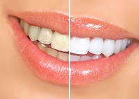
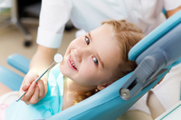

Izbjeljivanje zubi je stomatološki postupak kojim se postojeća nijansa zubi mijenja u nekoliko nijansi svijetliju, a rezultati i njihova trajnost ovise o prirodnoj boji zuba, vrsti zahvata za izbjeljivanje zubi, ali i vašem načinu života nakon zahvata.
Fiksna proteza se uglavnom koristi u starijem uzrastu i kod izraženih nepravilnosi. Fiksne proteze za zube daju mnogo bolje rezultate od mobilnih proteza za zube jer se ne skidaju i zalepljene su za vaše zube, tako da je korigovanje zuba neprekidno. Fiksne proteze za ispravljanje zuba mogu biti regularne i lingvalne.

Dječija stomatologija je dio dentalne medicine koja se bavi prevencijom i liječenjem zuba kod djece. Oralno zdravlje djece započinje pravilnim navikama održavanja oralne higijene koja djeca mogu usvojiti u ranoj dobi i tako preventivno utjecati na nastanak karijesa na mliječnim, a kasnije i na stalnim zubima.